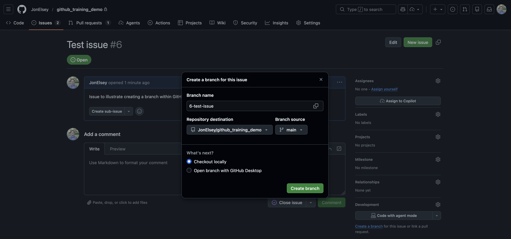

Committing your work
Commits, branches and forks
You are here:
Issue -> Branch -> Pull Request -> Review -> Merge -> Close
From Issues to lines of code
Once we’ve fleshed out our ideas, the next step is implementing them into the codebase. e.g.:
git checkout main
git add <files>
git commit -m 'did some stuff`
git pushThis is fine for individual work. We don’t necessarily need branches, since the work is “linear”.
main, branches and forks?
Consider our GitHub repository like a tree. main represents the trunk of that tree - it is the central, stable point of focus for our project.
Branches and forks are different ways to create a separate workspace where you can work in isolation from main. The idea is that once work on the branch is complete, it will be merged into main.
Branches are internal to the repository you are working on. They branch out from the trunk.
Forks are entirely separate separate copies of the repository. Often, someone will create a fork to copy a repository they like (but don’t own) and work on it separately or implement a feature/fix. This work can be merged back into the original repository if desired.
- Sometimes, a fork can spin out into its own thing entirely - e.g. LibreOffice was originally a fork of OpenOffice.
The question is - how to implement our ideas when we’re working as a team?
When to commit to the main branch
Direct commits to main are fine for work that only you use. For team work: generally don’t. If lots of people independently commit to main, it is much less likely to be stable.
Why committing to main is a problem in team projects
In a team‑based project, committing directly to main means that the team loses sight of what is being put in the main branch.
This causes several problems:
- loss of visibility into what changed and why
- no opportunity for teammates to question assumptions, or suggest improvements
- no shared understanding of how the codebase evolved
Committing directly to main also makes merge conflicts way more likely!
We will learn more about these on day 2. Merge conflicts happen when two people change the same part of the code in different ways. Using pull requests we can control this; with commits to main we cannot.
For these reasons, many projects explcitly prohibit people from being able to push directly to main.
You mean there’s a better way?
- Create a branch (or fork). This is often referred to as a feature branch.
- Make your changes there
- Open a pull request
- Merge into
mainonce reviewed
Doesn’t this use valuable time that I could spend coding/writing?
This workflow might take longer than the simple git add/git commit workflow from above.
However, if one person messes up a commit, it inhibits the work of everyone to go back and untangle it; a job which is made harder since you are likely the only person with any information on what occurred and why. This is significantly mitigated with a branch -> PR workflow.
Forks vs branches
A rule of thumb: - For work within Imago/other team repositories: use branches - For work on projects you don’t own: use forks
Branches live inside the main repository, and are visible to the team. Forks sit outside the repo and hide your work unless people know where to look. So when working as a team, it is better to use branches over forks.
That said, it is ultimately project-dependent. If the documentation explicitly says to fork rather than branch, then follow that convention.
Branches should be transient
Long-lived branches are not ideal! The longer a branch lives, the more likely it will diverge from main. It also detracts from the best practices around Issues - they should be used for digestible chunks of work.
Keeping long-lived branches is fine for doing work that isn’t intended to ever be merged (e.g. as a playground), but ideally they should be completed and merged and new branches/Issues set up to track follow-on work.
Branch naming matters
Give your branches descriptive names. A branch name should convey the highest‑level intent of the work. A bad example might be:
je_test1
Better examples:
aggregation_to_lsoafix_missing_metadataadd_uncertainty_outputs
Basing branch names on Issues
If you have an Issue, you can use it as the basis for the branch name, e.g.:
- Issue #23: Add support for seasonal data processing
- Branch name:
23-seasonal_processing
This makes it immediately obvious why the branch exists, what it relates to, and how it fits into the broader workflow.
GitHub defaults to a naming convention like this. If you create an Issue, there is a prompt to create a branch. Clicking this box will give you the option to make a branch - the default name being that of the Issue and its number.

Commit messages
The same principle applies to commit messages; it works better if there is a convention for how we write them.
One example is to use Conventional Commits, or a similar style.
Writing commit messages is much easier if your commits themselves are logically structured - i.e. they implement one thing in a fairly stable state.
Why commit history matters:
The Good: (Conventional Commits)
commit b291vav feat: added calculation of yearly PM2.5
commit f103ab2 fix: load in pm2.5 rather than pm10 concentration in `pm2.5_aggregation`
commit e9a41c0 fix: correctly use weighted mean rather than mean-of-means in `pm2.5_aggregation`
commit 8b21aa4 fix: remove accidentally-added quotation mark in `pm2.5_aggregation` causing SyntaxError
commit 7c04dd1 feat: added visualisation routines for demonstration at summit
commit 6df3a22 fix: corrected colour scale in `visualisation.py`This clearly communicates what you’ve been doing. A history like this makes is very clear how your code evolved and why changes were made.
The Bad:
commit b291vav work done while on train
commit f103ab2 fix
commit e9a41c0 fix again
commit 8b21aa4 oops
commit 7c04dd1 final
commit 6df3a22 final_finalEach of these changes corresponds to the “Good” changes above. It is not clear what is being done here. You’ll look back on this in a week and think “what was I trying to fix?” “Why did I have to change the final version again?”
The Ugly:
...This last bit is not empty by mistake - it is to illustrate that a messy Git history is better than no Git history at all.
How often should I commit/push my branch?
More often than we probably do.
If the work only exists on your laptop, it might as well not exist at all as far as your colleagues are concerned!
There’s not a hard-and-fast rule for how often you should commit - a rule of thumb I use is “is my work a) stable, and b) would I be unhappy if I lost the work I had done?”.
There’s no penalty for having lots of commits! This can make it easier to break up what you have done into small chunks. This also makes writing useful commit messages easier!
You don’t need to push every time you commit, but doing so a few times a day is probably a good idea.
Don’t be afraid!
People sometimes avoid committing or PRing their work because they are unsure about it. That doesn’t matter! We want to build a culture of collaboration, not blame. If something isn’t ready, that’s fine; your colleagues can help you make it so.
Key takeaways
- Treat
mainas stable, potentially external-facing code - Do not commit directly to
mainfor team projects - Use branches for internal collaboration, and give them clear names
- Commit and push often